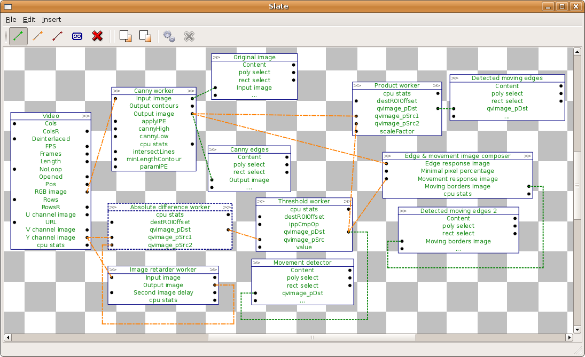

PARP Research Group
PARP Research Group
| PARP Research Group |
Universidad de Murcia |
The Designer GUISo far, we have discussed block oriented programming by source code writing. In this section we will describe the Designer, a tool provided by the QVision to perform visual block-oriented programming. We will start by extending the movement edge detector example application, created in section Creating custom processing blocks, to include the visual design tool. The full source code of that application can be found in the examples/movementEdgeDetector directory included in the actual QVision release. Its source code is also documented here. Including the designer window in an applicationFirst, the application should include the header file for the QVDesignerGUI class. Add the following line at the includes section of the movementEdgeDetector.cpp file: #include <QVDesignerGUI>
Then, we can add to the application the designer object. It must substitute any other Default GUI object in the application (for example, any QVDefaultGUI object). A single instance object of the QVDesignerGUI class should be created right after the QVApplication object in the main function, and before the call to exec(): int main(int argc, char *argv[]) { QVApplication app(argc, argv, "Example program for QVision library. Obtains several features from input video frames." ); QVDesignerGUI interface; [...] return app.exec(); } The model control interface of QVDesignerGUI is the same of QVDefaultGUI interface. Its application get the same execution's parameter, and it uses the same input and output parameters's widgets (but QVDesigner places them differently). The following screenshot shows the main QVDesignerGUI for a QVision example application:

It is a slate widget, that allows the user to inspect and modify the application block structure. Blocks are presented as boxes, containing the block name, and the input/output properties. Property links are shown using green dashed lines (for synchronous links) or orange discontinuous lines (for asynchronous links) between the dynamic properties. The application contains no sequential property links. The only asynchronous links are between the processing blocks, and the output image canvas blocks. The user can stop and resume the application. When it is stopped, the data path structure can be modified. The user can add or delete nodes (processing blocks), and/or create new data links, or delete existing ones. Using the designerThere are four main widget areas in the QVDefaultGUI window: A. Menu areaContains the File, Edit and Insert menus. In the File menu we can find the following actions:
In the Edit menu we can find the following actions:
In the Insert menu we can find all items types that we can insert in the slate, by clicking it. We can find them organized in the following groups:
B. Action barThe action bar contains buttons for the more frecuently actions: Asinchronous Link Mode, Sinchronous Link Mode, Sequential Link Mode, Join, Delete, Bring to Front, Send to Back. The action bar includes two buttons for running and stopping the sistem too:
C. SlateWe can do a lot of operations from the slate by mouse clicking or mouse dragging. The slate back By right clicking in the slate back, we can open an action menu whith the allowed operations. By mouse dragging over the slate back, we can select several items. Items The items are divided in three parts: the head the body and the link points (placed in the left and the right of the body). We can select an item by left clicking on it, and we can open an allowed actions menu by right clicking the item. By double clicking the item's body we open a properties window. By double clicking the item's head we open a remane window The items can be moved from the slate by mouse dragging. But if we are dragging over a lincking point, we are creating a new link, the link will be created if we drag the link over other allewed lincking point and we drop it. Groups The groups and the items are similar. They have a head (that is out), a body and linking points. We can do the same actions less what open the properties window (groups have not it). In a group's body we can see its internal items, that have been reduced. We can operate with the internal items normally. The scroll wheel allows us to do zoom over the slate. There is an arrow in the group's body right-bottom side, this arrow lets us to change he group view (by double clicking it), the group view can change from internal items view to abstract view. Abstract group's view hide its internal items and only show the name of the properties lincken outside the group. C. State barThe state bar is under the slate, and show the error and sistem messages. Final example applicationWe will finish by extending the movement edge detector example application, created in section Creating custom processing blocks, to include the visual design tool. The full source code of that application can be found in the examples/movementEdgeDetector directory included in the actual QVision release. Its source code is also documented here. We substitute the default interface with the designer. This is done by simply changing the following line: QVDefaultGUI interface; With the lines: QVDesignerGUI interface; QVDesignerGUI::registerUserType<MovingEdgesDetector>("MovingEdgesDetector"); QVDesignerGUI::registerUserType<QVCannyEdgeDetector>("QVCannyEdgeDetector"); QVDesignerGUI::registerUserType< QVImageRetarderBlock<uChar,1> >("QVImageRetarderBlock<uChar,1>"); The application will now open the designer window when it is launched. |